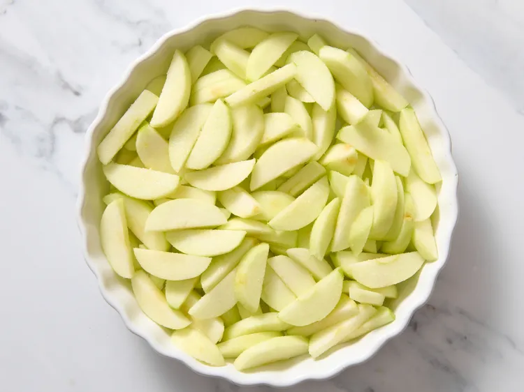
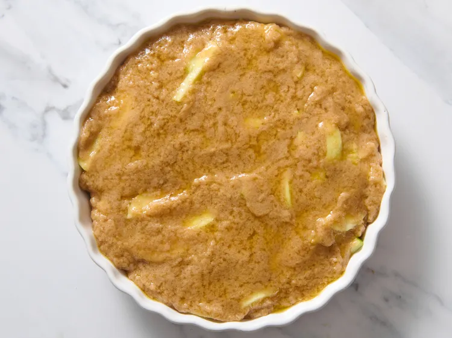

Easy Swedish Apple Pie

Description
This Swedish apple pie bakes cinnamon apples topped with a golden
cake-like crust. No rolling out dough required! Pairs wonderfully
with vanilla ice cream and a drizzle of caramel.
Ingredients
- 1 ½ pounds Granny Smith apples - peeled, cored and sliced
- 1 tablespoon sugar
- 1 cup sugar
- ¾ cup melted butter
- 1 large egg
- 1 teaspoon cinnamon
Steps
- Gather all ingredients. Preheat the oven to 350 degrees
F (175 degrees C).

- Toss apples with 1 tablespoon sugar and pour them
into a deep 9-inch pie plate.

- Thoroughly mix together 1 cup sugar with flour,
butter, egg, and cinnamon. Spread this evenly
over the top of the pie.

- Bake in the preheated oven until apples have
cooked and topping is golden brown, 40 to
45 minutes.

Home